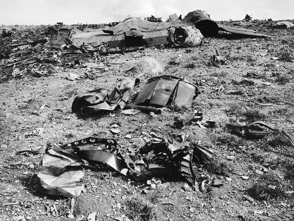

2 moteurs et le fuselage arrière déchiqueté de l'A-12 écrasé le 24 CIA < Pangloss Films < "Stranded Far From Area 51", National Geographic, 20 mai 2011

Lancement du satellite Telstar 2.
Signature de l'Accord de Statut des Forces entre entre le Gouvernement Australien
et le Gouvernement des USA, concernant le Status des Forces des Etats-Unis en Australie ATS 1963 n°
10 UNTS 469 p. 55; TIAS 5349Traité Pine Gap 1966.
Leroy Gordon Cooper effectue 22 orbites à bord de la dernière
capsule Mercury, battant ainsi le le record du plus
long vol spatial : 34 h et 20 mn, à bord de Faith-7. Lors de l'orbite finale, il avertit la station radio à
Terre près de Perth qu'un objet verdâtre s'approche de lui en se déplaçant d'Est en Ouest, dans le sens contraire
des orbites effectuée par l'homme à cette époque. Le phénomène est également repéré par le matériel de détection de
Perth. NBC propage le rapport et prévoit d'interviewer Cooper, qui ne dit rien et renvoie aux la déclaration
officielle annoncée par la NASA. Mais aucune déclaration de viendra de la NASA.
Observation à New Plymouth (Nouvelle Zélande)Cas Blue Book n° 8360 non résolu.
Observation à Pequannock (New Jersey)Cas Blue Book n° 8363 non résolu.
Un A-12/Oxcart (n° 123) testé depuis
Groom Lake s'écrase à cause des gelures du pilote à 14 miles au
sud de Wendover (Utah) McIninch. Le pilote, Ken Collins,
s'éjecte et atterrit sain et sauf, avant d'être récupéré par 3 hommes du coin. Il leur raconte qu'il pilotait un
F-105 qui embarquait une arme nucléaire. 100 hommes sont dépéchés pour nettoyer la zone du crash. Il sera dit à
la presse qu'un F-105 s'était écrasé, et en 2011, l'Air Force liste toujours l'incident comme tel Jacobsen, Annie: Area 51, Orion (Londres), 2011, p. 197.